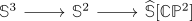

low stable homotopy of CP^n
Proposition
Let $n \geq 1$, then
\begin{align*}
\pi_0(\tilde{\mathbb{S}}[\mathbb{C}\mathbb{P}]) =& 0 \\
\pi_1(\tilde{\mathbb{S}}[\mathbb{C}\mathbb{P}]) =& 0 \\
\pi_2(\tilde{\mathbb{S}}[\mathbb{C}\mathbb{P}]) =& \mathbb{Z} \\
\pi_3(\tilde{\mathbb{S}}[\mathbb{C}\mathbb{P}]) =& 0
\end{align*}
Proof
$0,1,2$
follows from stable hurewicz theorem and the singular homology of a complex projective space
$3$
follows from the cofiber sequence

where passing to $\pi_3$ shows
\begin{align*}
\pi_3(\mathbb{S}^3) \xtwoheadrightarrow{\eta} \pi_3(\mathbb{S}^2) \rightarrow \pi_3(\widehat{\mathbb{S}}[\mathbb{C}\mathbb{P}^2]) \rightarrow \pi_2(\mathbb{S}^3) \cong 0
\end{align*}
is an exact sequence: here the attaching map $\eta$ is a generator of $\pi_3(\mathbb{S}^3)$ (cf. list: homotopy groups of spheres) and hence postcomposition with it is an epimoprhism. This shows that $\pi_3(\widehat{\mathbb{S}}[\mathbb{C}\mathbb{P}^2])$ is an extension of zero groups, hence trivial.